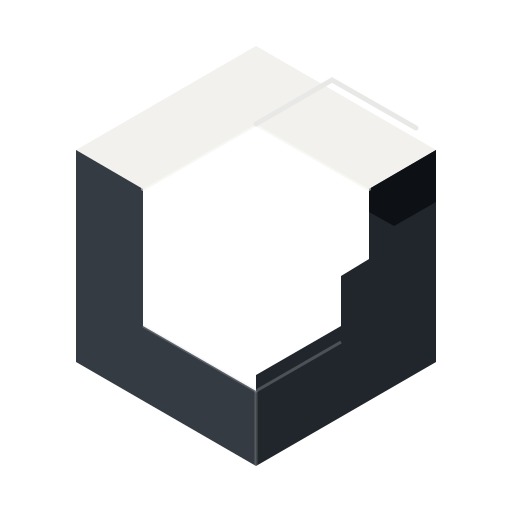

Concept A / recommended

Signature Corner
An open, machined three-member object that preserves Cube memory without becoming a miniature Rubik or generic closed isometric cube. The missing upper-right member becomes a repeatable signature cut.